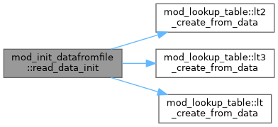
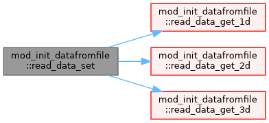

Module to set (or derive) initial conditions from user data We read in a vtk file that provides values on grid. More...
Functions/Subroutines | |
| subroutine, public | read_data_init () |
| elemental double precision function, public | read_data_get_3d (ivar, x1, x2, x3) |
| elemental double precision function, public | read_data_get_2d (ivar, x1, x2) |
| elemental double precision function, public | read_data_get_1d (ivar, x1) |
| subroutine, public | read_data_set (ixil, ixol, x, val, nval) |
| Set values according to user data. | |
Variables | |
| type(lt_t), dimension(max_valuesfromfile) | lt_1d |
Detailed Description
Module to set (or derive) initial conditions from user data We read in a vtk file that provides values on grid.
Function/Subroutine Documentation
◆ read_data_get_1d()
| elemental double precision function, public mod_init_datafromfile::read_data_get_1d | ( | integer, intent(in) | ivar, |
| double precision, intent(in) | x1 | ||
| ) |
◆ read_data_get_2d()
| elemental double precision function, public mod_init_datafromfile::read_data_get_2d | ( | integer, intent(in) | ivar, |
| double precision, intent(in) | x1, | ||
| double precision, intent(in) | x2 | ||
| ) |
◆ read_data_get_3d()
| elemental double precision function, public mod_init_datafromfile::read_data_get_3d | ( | integer, intent(in) | ivar, |
| double precision, intent(in) | x1, | ||
| double precision, intent(in) | x2, | ||
| double precision, intent(in) | x3 | ||
| ) |

◆ read_data_init()
| subroutine, public mod_init_datafromfile::read_data_init |
Definition at line 32 of file mod_init_datafromfile.t.
Here is the call graph for this function:

◆ read_data_set()
| subroutine, public mod_init_datafromfile::read_data_set | ( | integer, intent(in) | ixi, |
| integer, intent(in) | l, | ||
| integer, intent(in) | ixo, | ||
| l, | |||
| double precision, dimension(ixi^s,1:ndim), intent(in) | x, | ||
| double precision, dimension(ixi^s,1:nval), intent(out) | val, | ||
| integer, intent(in) | nval | ||
| ) |
Set values according to user data.
Definition at line 92 of file mod_init_datafromfile.t.
Here is the call graph for this function:

Variable Documentation
◆ lt_1d
| type(lt_t), dimension(max_valuesfromfile) mod_init_datafromfile::lt_1d |
Definition at line 20 of file mod_init_datafromfile.t.